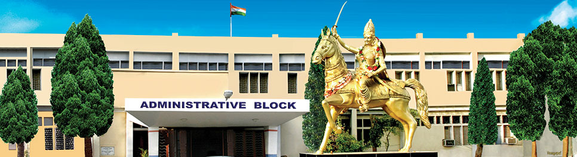

Kakatiya University is a public university located in Warangal in the Indian state of Telangana. It was most recently accredited with an "A" Grade by the National Assessment and Accreditation Council of India on 12 September 2017. The university offers about 120 programs at undergraduate and postgraduate levels in the faculties of arts, science, commerce and business management, social sciences, education, engineering and pharmaceutical sciences with constituent and affiliated colleges spread over four districts of Telangana. The faculties include 248 teaching staff and 622 non-teaching staff.

The university has a network of eleven constituent colleges with twenty-eight departments. During 2011-2012, enrollment of students for under-graduate programs was around 90,000 in the 2004-2005 school year, according to the university's own website, while it was 8,000 for post-graduate courses. About 850 research scholars are registered for PhD programs in different departments.
For the first time in Telangana, postgraduate in-service science courses for teachers and government employees, M.L.I.Sc and MCJ, diploma in mimicry, certificate course in communication skills in English, M.Sc. (Environmental Science), B.Tech. and M.Sc. (Psychology) have been made available.
The university also promotes individual and collective research by faculty and scholars. On 20 March 2018, UGC granted autonomy to 21 state universities including Kakatiya University. Many Endowment Lectures have been instituted at the University where scholars present papers. One such endowment lecture is that of Pilli Alfred James annual endowment lectures which has seen public administrators take a stand on new issues in their discipline.